Introduction to Artificial Intelligence and Machine Learning 4
Jiabao.Xu@glasgow.ac.uk
massimo.vassalli@glasgow.ac.uk
Components of the course
A basic introduction to the field of Artificial Intelligence with a focus on the foundations of machine learning to solve engineering problems
- History of AI and introduction to ML Massimo Vassalli
- The ML pipeline Massimo Vassalli
- ML tools Massimo Vassalli
- Artificial Neural Networks Jiabao Xu
- AI and Ethics Guest: Ciorsdaidh Watts
Assessment
This course develops over S1 (Weeks 1-10+11), and assignments are spread across the year, organised as coursework, reports and a group activity.
- History of AI and introduction (including python knowledge)
- ML
- CW1: The ML pipeline [individual, 25%] 24/10
- CW2: ML tools [group, 40%] 14/11
- CW3: Artificial Neural Networks [individual, 25%] 05/12
- AI and Ethics
- MOOC course completion [individual, 10%] 24/11
Note: the group submission of CW2 is based on groups created randomly on Moodle (we will random-create them in due course, after having stabilised the students cohort)
Tutorials, feedback and additional reading
Tutorials are organised periodically, starting week 3, with Jiabao Xu, to see the practical aspects of implementing machine learning with Python.
We do have lab sessions planned with demonstrators, coordinated by Jiabao Xu. Students are divided in groups. Please follow your timetable!
Machine Learning is a broad and growing topic and online resources grow every day. We suggest the following curated sources:
- Textbooks (accessible via UofG library subscription)
- M.J. Neuer, Machine Learning for Engineers
- A. Zollanvari, Machine Learning with Python
- Online Courses (MOOC)
- Bo Liu, Applied AI for Engineers and Scientists using Matlab as a programming language.
Note
UofG student get free access to some Coursera, LinkedIn Learning and FutureLearn resources based on an institutional collaboration framework with the University. More details on how to access them is available online.
Python
Along this course, ML algorithms and data analysis pipelines are implemented in Python. A basic knowledge of Python is required, including variables, data types, functions, and control flow. We will use popular libraries such as NumPy, pandas, and matplotlib for data manipulation and visualization. Basic knowledge of these libraries is required. You can refresh your knowledge through:
This course will be based on scikit-learn and (later in the course) Pytorch.
Python will not be assessed and basic knowledge is assumed. If you are not much familiar with using Python, please take the time to refresh your knowledge and practice before the course labs start.
Ethics
AI is rapidly shaping the world around us, and the development and deployment of AI should incorporate ethical considerations, accounting for social justice, inclusion, and sustainability. To address this aspect students are required to take the MOOC futurelearn module AI Ethics, Inclusion & Society developed by the colleague Ciorsdaidh Watts. By following this module you will:
- Examine the ethics and impacts of AI on our shared future
- Explore ethical theory and apply this to AI
- Evaluate the human and societal impact of AI
You must complete the module and submit module the digital Certificate of Achievement by the deadline through Moodle. This accounts for 10% of the course mark with a 50% penalty for delayed submissions. The access is also free for UofG students. Note: this course takes time: start asap.
Important
Meet the lecturer: at the end of the course, Ciorsdaidh Watts will join us for an interactive flipped-classroom discussion on AI and ethics, with the expectation that all students have taken the module.
Coursework 1
Basic ML knowledge will be assessed through an individual coursework. This is based on one dataset of choice among those suggested by the lecturer. This components accounts for 25% of the final mark. Submissions are allowed after the deadline, with standard engineering penalties. Deadline 24/10/2025 12:00
Task
- Apply linear regression or logistic regression to chosen benchmark dataset.
Submission
- Report (template provided, max 5 pages)
- Jupyter notebook
Key focus (assessment rubrics are available on Moodle)
- Rigorous experiment design
- Justification of modelling choices
- Communicate results effectively
Coursework 2
Extended ML knowledge will be assessed as a group coursework submitted through Moodle and a group presentation. This is based on the dataset chosen for CW1 and groups will be randomly created. These components all together accounts for 40% of the final mark. Submissions are allowed after the deadline, with standard engineering penalties. Deadline for submitting the material: 14/11/2025 12:00
Task
- Apply 2-3 scikit-learn tools to chosen benchmark dataset.
- Critically compare methods and propose the best-performing pipeline.
Submission
- Report (template provided, max 15 pages)
- Oral presentation
Key focus (assessment rubrics are available on Moodle)
- Teamwork and critical comparison
- Communication of insights beyond raw accuracy
Coursework 3
Artificial Neural Netowrks knowledge will be assessed through an individual coursework submitted through Moodle. This is based on the dataset chosen for CW1. This component accounts for 25% of the final mark. Submissions are allowed after the deadline, with standard engineering penalties. Deadline 05/12/2025 12:00
Task
- Apply an Artificial Neural Network (PyTorch) to the same dataset from CW1.
Submission
- Report (template provided, max 5 pages)
- Jupyter notebook
Key focus (assessment rubrics are available on Moodle)
- Design & justification of ANN
- Critical comparison with baseline (CW1)
- Demonstrating deeper understanding of model complexity
Jiabao Xu / Bio
Lecturer in Biomedical Engineering, James Watt School of Engineering
- Bachelor and Master in Chemistry, Imperial College London, 2011 to 2015
- DPhil and postdoc in Engineering Science, Oxford, 2015 to 2023; visiting scholar in Boston, 2019
- Glasgow since 2023, leading a group on single-cell Raman spectroscopy and machine learning
- Visiting Professor, Shanghai East Hospital, Tongji University
jiabao.xu@glasgow.ac.uk
Jiabao Xu / Research
Lecturer in Biomedical Engineering
The chemistry of living cells, without labels, one cell at a time
- Single-cell Raman spectroscopy
- Machine learning on spectra
- Label-free diagnostics: pathogens, immune cells
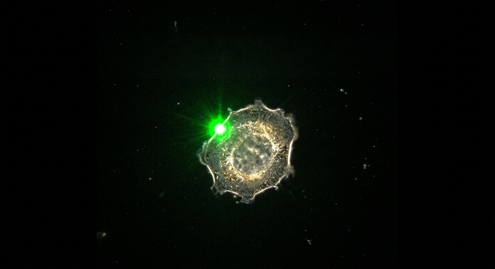
One cell, one laser spot, one spectrum of about 1,000 numbers
Jiabao Xu / ML
Where the machine learning is
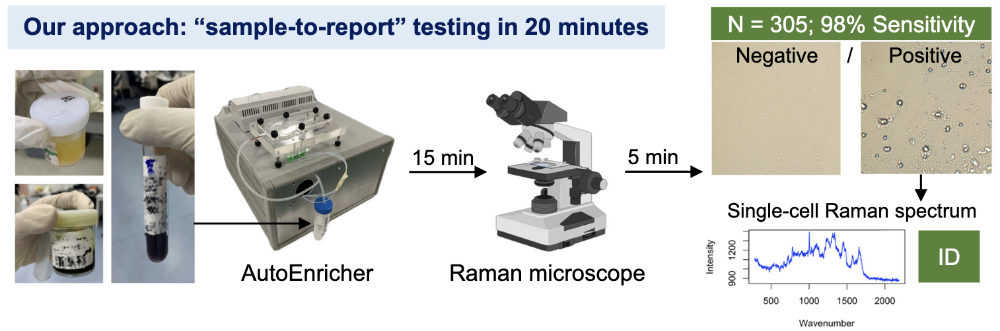
- Clinical sample to answer in 20 minutes, no culturing
- 36 pathogen species, one classifier
- Same pipeline as this course: clean, split, train, evaluate
Right: single-cell spectra of 36 species projected to two dimensions (t-SNE). Nat Commun 2026, DOI 10.1038/s41467-025-66996-y
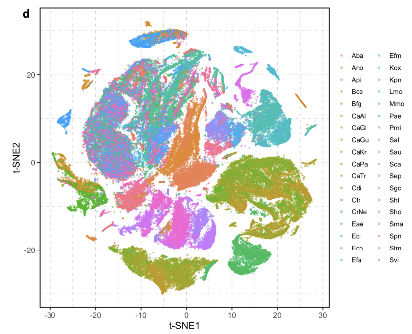
Massimo Vassalli / Bio
Professor of Bioengineering
- Integrated Master in Physics, University of Florence, Italy
- PhD in non-linear dynamics and complex systems (Engineering), University of Florence, Italy
- Researcher at the National Institute of Optics, Florence, Italy
- Visiting scientist at ETH Zurich (Switzerland), CNRS Nice (France)
- Senior Researcher at the Institute of Biophysics of the National Research Council, Genova, Italy
- Endeavour Fellow at the Victor Chang Cardiac Research Institute, Sydney, Australia
- Started in Glasgow in 2019
massimo.vassalli@glasgow.ac.uk
Massimo Vassalli / Research
Mechanobiology and Mechanomedicine
- Advanced imaging and spectroscopy techniques for the biophysical analysis of single cells (light microscopy, force microscopy, spectroscopy)
- Mechanical properties of soft tissues and cells as biomarkers for label-free diagnostics
- Cellular mechanoadaptation (and mis-adaptation) as a process underpinning ageing (and ageing-related pathologies)
Mechanosensing and Cellular Mechanics lab (MeCB) - www.mecb.eu
Massimo Vassalli / ML
How do we use ML/AI ?
- Image processing and Data-driven analysis of microscopy images
- Clustering and classification in biological samples based on spectroscopy and correlative informations
- Automation of Mechanical analysis
Mechanosensing and Cellular Mechanics lab (MeCB) - www.mecb.eu
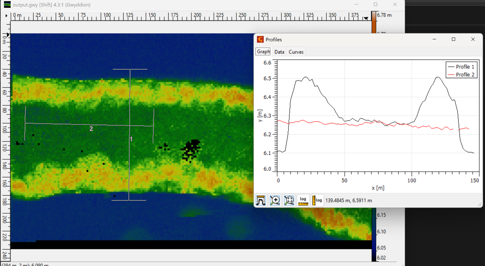
Machine Learning
Machine learning is a branch of artificial intelligence that studies and builds models that can learn from data or the environment to make predictions about unknown data or make decisions based on environmental information.
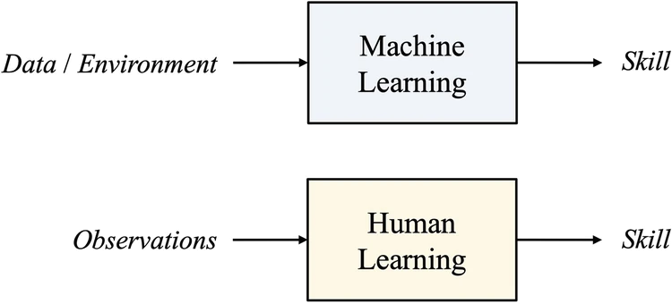
Human vs Machine learning
This introduction is based on the great book from Wenmin Wang Principles of Machine Learning
ML and AI
Artificial intelligence (AI) is the study of how to build an intelligent agent that can perceive the external environment and take corresponding actions to achieve a certain goal, while machine learning - more specifically - is how to build a model that can learn from data or the environment and use it to make predictions or decisions.
An intelligent agent deals with three elements:
- the percepts \(P\) through sensors
- the actions \(A\) with actuators
- the transition function \(f\) that maps percepts to actions.
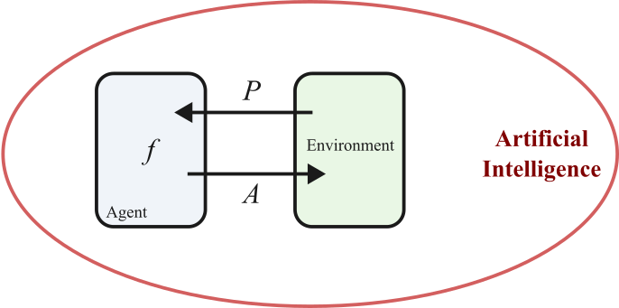
The action of the intelligent agent can be represented as: \[ f : P \rightarrow A \]
The ML approach
Machine learning requires information from data or the environment, and the percepts \(P\) of the intelligent agent can provide data or perceive environmental information for machine learning; machine learning can learn to make predictions or decisions, which are equivalent to enhancing the performance of transition function \(f\) of the intelligent agent, enabling it to produce the correct actions \(A\).
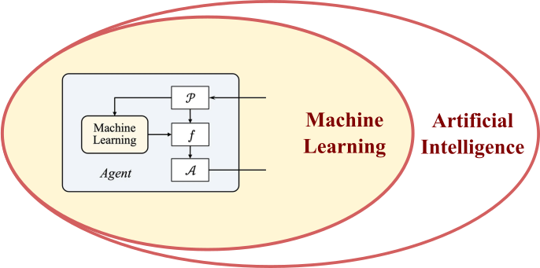
ML is a branch of AI
Deep learning
Within the field of Machine Learning, deep learning allows computational models that are composed of multiple processing layers to learn representations of data with multiple levels of abstraction.
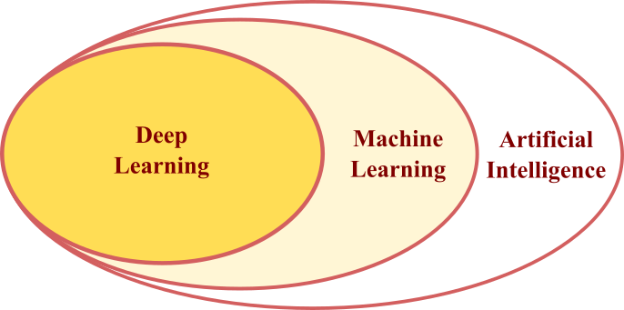
Most modern deep learning models are built on artificial neural networks (ANNs), which are inspired by the information processing structure in the brain, and each ANN is a type of network consisting of multiple layers of neurons.
Deep and Shallow learning
Within the field of Machine Learning, deep learning allows computational models that are composed of multiple processing layers to learn representations of data with multiple levels of abstraction.
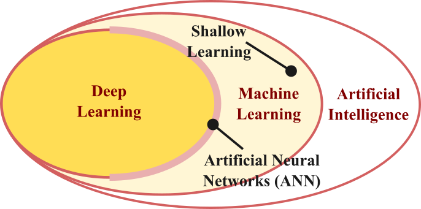
Most modern deep learning models are built on artificial neural networks (ANNs), which are inspired by the information processing structure in the brain, and each ANN is a type of network consisting of multiple layers of neurons.
The perspectives of Machine Learning
ML can be observed through different lenses, each of them offering a different perspective.
Different Problems. The aim of the learning process depends on the characteristics of the data and the task to be solved. It is necessary to know the current state and the feedback rewards from the environment and how to decide the next action. A way of looking at ML is by the problem it solves (what to do), described in the form of Learning Tasks.
Different methods. Different methods are designed to deal with specific data types and output results of different nature, based on update mechanisms that also implement different strategies. ML methods can be categorised based on their signature(what type), described in the form of Learning Paradigms.
Different theories. Given a method signature and a problem, still several approaches exist to phrase and solve the problem based on the internal structure of the algorithm. The focus goes on the theoretical approach (how to), described in the form of Learning Frameworks.
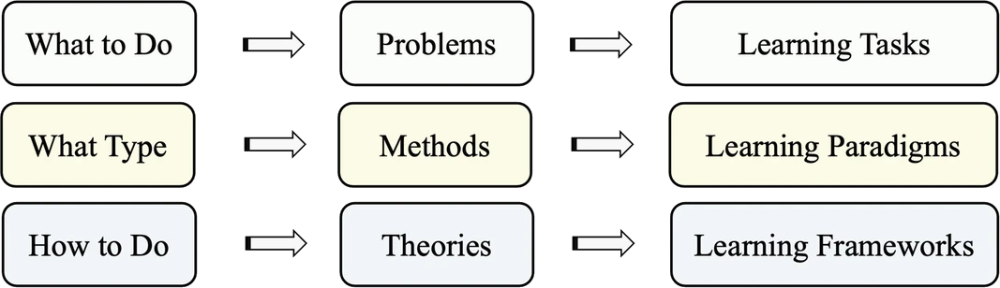
Frameworks - Tasks - Paradigms
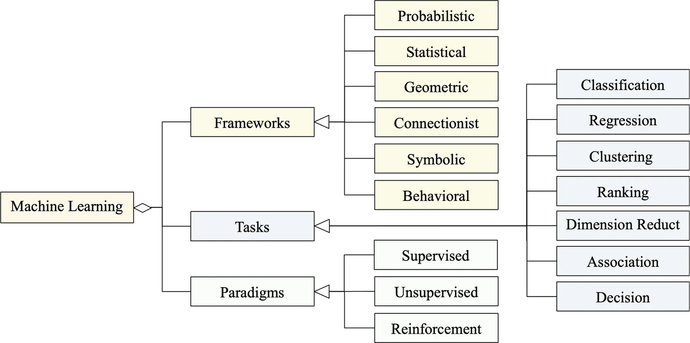
Learning Frameworks /table
| Framework | Brief description | Sub-framework |
|---|---|---|
| Probabilistic | Using probability to represent the conditional | Generative |
| correlation of random variables | Discriminative | |
| Statistical | Using statistics for constructing machine | Parametric |
| learning algorithms | Nonparametric | |
| Geometric | Using Euclidean or non-Euclidean geometry | Hyperplane |
| for data or algorithms | Manifold | |
| Point cloud | ||
| Connectionist | Based on the connectionist model of artificial | Shallow/deep |
| neural networks | Forward/backward | |
| Symbolic | Based on the physical symbolic system | Logic based |
| Rule based | ||
| Causality based | ||
| Behavioral | Based on the behavioral decision theory | Multistep |
| Sequential |
Learning Frameworks
Machine learning encompasses diverse conceptual frameworks, representing different paradigms for learning from data and experience.
- Probabilistics: based on probability to represent the conditional correlations between random variables. Example: Bayesian network (generative model).
- Statistical: based on statistics to construct machine learning algorithms. Example: linear regression (parametric) and k-nearest neighbours (non parametric).
- Geometrical: based on either Euclidean or non-Euclidean geometry as the representation for datasets or algorithms of machine learning. Example: support vector machine (SVM), based on hyperplane.
- Connectionist: uses artificial neural networks as the connectionist model to mimic the brain’s nervous system. Example: convolutional neural network (fgeedforward deep network)
- Symbolic: uses the physical symbolic system such as logic, rules, or other symbolic processing methods to construct learning algorithms. Example: association rules (rule-based)
- Behavioral: based on behavioral decision theory. Example: decision tree (multistage decision)
This classification is based on Principles of Machine Learning. Different authors could suggest a slightly different structure
Learning paradigms
A learning paradigm in machine learning refers to the pattern or style taken by learning algorithms independently of the specific applications. Learning paradigms differ in the way they learn from the data or the environment.
- Supervised learning. The data set is labeled, and the algorithm learns to map inputs to outputs based on example pairs.
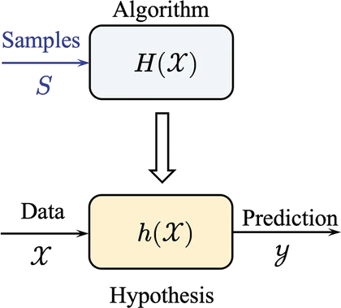
Learning paradigms
A learning paradigm in machine learning refers to the pattern or style taken by learning algorithms independently of the specific applications. Learning paradigms differ in the way they learn from the data or the environment.
- Supervised learning. The data set is labeled, and the algorithm learns to map inputs to outputs based on example pairs.
- Unsupervised learning. The data set is unlabeled, and the algorithm tries to find patterns, structures, or groupings within the data without explicit output labels.
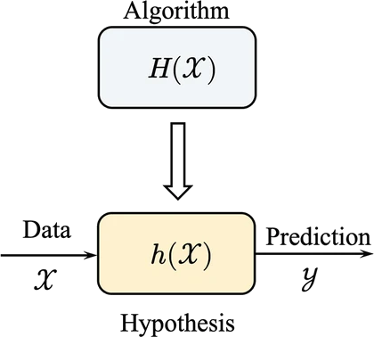
Learning paradigms
A learning paradigm in machine learning refers to the pattern or style taken by learning algorithms independently of the specific applications. Learning paradigms differ in the way they learn from the data or the environment.
- Supervised learning. The data set is labeled, and the algorithm learns to map inputs to outputs based on example pairs.
- Unsupervised learning. The data set is unlabeled, and the algorithm tries to find patterns, structures, or groupings within the data without explicit output labels.
- Reinforcement learning. The data set is not labeled in the traditional sense; instead, the algorithm learns by interacting with the environment and receiving feedback in the form of rewards or penalties, aiming to maximize cumulative reward over time.
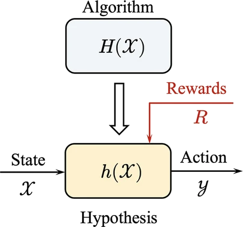
In practice, the design of a machine learning algorithm may consider different paradigms, such as whether labeled data is needed or whether there is a dynamic interaction process between the intelligent agent and the environment.
Learning tasks
A learning task refers to a basic problem that can be solved by machine learning. It is a common problem abstracted from domain problems, and the algorithms of machine learning with the same mechanism can be used to complete this task.
Common learning tasks include:
- Classification: Assigning input data to one of several predefined categories.
- Regression: Predicting a continuous value based on input data.
- Clustering: Grouping similar data points together without predefined labels.
- Dimensionality reduction: Reducing the number of variables under consideration, often for visualization or preprocessing.
- Ranking: Ordering items according to relevance or preference.
- Association: discover meaningful relationships between data in the input dataset.
- Decision making: Making multistage and sequential decisions, often under uncertainty, to optimize outcomes over time.
- Anomaly detection: Identifying data points that deviate significantly from the norm.
Each task requires specific approaches and algorithms, and understanding the task helps in selecting the appropriate machine learning method.
Relationship between the perspectives
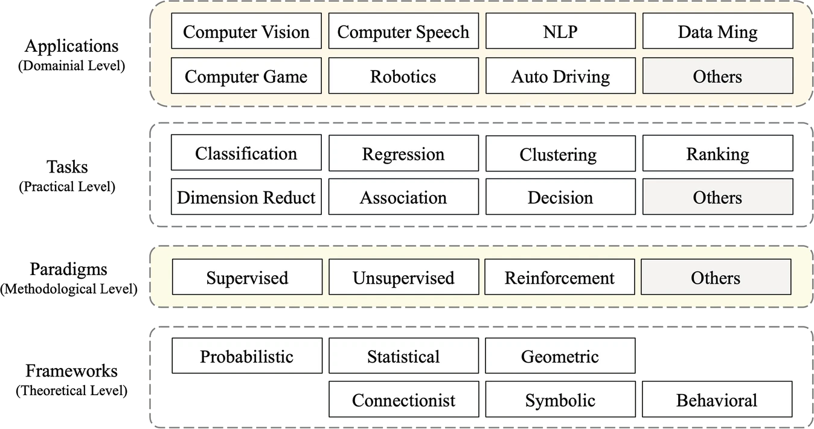
Suggested readings and activities
Suggested readings:
- The view on the different perspectives of Machine Learning is taken from Principles of Machine Learning; you can read through chapters 1 and 2 if you want more details on this aspect.
Suggested activities:
- Check (and update?) your installation of Python and all the main scientific libraries (numpy, pandas, scipy, matplotlib)
- Install (or update) scikit-learn

ENG4200 AI4